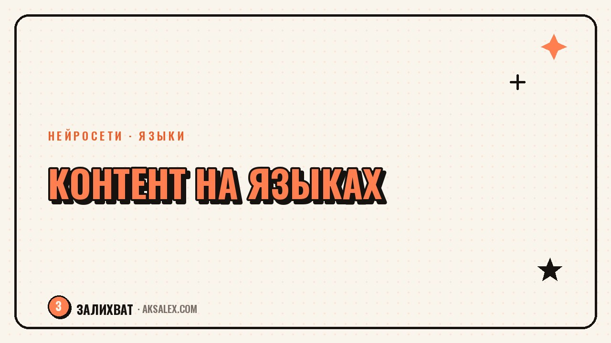

Мультиязычный контент: посты для разных стран

Если часть аудитории живёт за пределами твоей страны и говорит на другом языке, обычный перевод поста в лоб почти всегда работает плохо. Шутка не смешит, отсылка непонятна, а призыв к действию звучит казённо. Нейросети умеют переводить быстро, но между переводом и адаптацией есть разница, и именно она решает, останется человек читать дальше или закроет пост на второй строке.
Перевод и адаптация - это разные задачи
Перевод сохраняет смысл слов. Адаптация сохраняет эффект, ради которого пост писали - зацепить, рассмешить, вызвать доверие. Если в оригинале ты обращаешься к читателю с шуткой про местную реальность, дословный перевод превратит её в непонятный набор слов для человека из другой страны.
Нейросеть отлично справляется с переводом фактов - цифр, инструкций, описаний товара. С юмором, идиомами и культурными отсылками справляется хуже, и здесь без правки руками не обойтись.
Что можно доверить нейросети без правок
- Технические описания, характеристики, инструкции
- Ответы на частые вопросы без эмоциональной окраски
- Черновой перевод длинного текста для дальнейшей правки
- Подбор синонимов и упрощение сложных формулировок
Это тот случай, когда скорость важнее художественности: нейросеть даёт рабочую основу за секунды, а ты тратишь время только на финальную вычитку, а не на перевод с нуля.
Что обязательно проверять руками
| Элемент поста | Риск при машинном переводе | Что сделать |
|---|---|---|
| Шутки и каламбуры | Теряют смысл или звучат странно | Заменить на локальный аналог или убрать |
| Даты и меры | Формат путает читателя | Перевести в привычную систему для страны |
| Обращения и тон | Слишком формально или слишком фамильярно | Свериться с нормами общения в культуре |
| Отсылки к местным реалиям | Непонятны за пределами страны | Заменить на универсальный пример |
Хороший перевод не заметен читателю. Он не думает "это перевели", он просто понимает пост так же легко, как оригинал.
Как выстроить процесс, чтобы не переводить каждый пост с нуля
Собери словарь повторяющихся терминов
Название продукта, ключевые фразы, часто используемые обороты - занеси их в отдельный список с готовым переводом. Тогда нейросеть будет использовать одни и те же формулировки, а не придумывать новые каждый раз.
Проверяй тон на живом человеке
Если есть знакомый носитель языка или человек из целевой страны, периодически показывай ему готовые переводы. Даже пять минут обратной связи раз в месяц спасают от неловких формулировок, которые ты сама не заметишь.
Не переводи всё подряд
Не каждый пост нужен на другом языке. Личные истории и локальный юмор часто лучше оставить как есть, а переводить универсальные форматы: гайды, списки, обзоры.
Ошибки, которые чаще всего портят впечатление
Даже с хорошим переводом можно испортить впечатление организационными мелочами.
- Разный тон в оригинале и переводе - будто пишут два разных человека
- Забытые непереведённые куски интерфейса или подписи на скриншотах
- Игнорирование часового пояса и актуальности новостей для другой страны
- Перевод без адаптации валюты и цен в примерах
Частые вопросы
Можно ли полностью доверить перевод постов нейросети?
Для фактической информации да, для эмоционального и юмористического контента нет. Такие тексты нужно перечитывать и адаптировать вручную.
С какого объёма зарубежной аудитории имеет смысл переводить контент?
Если из одной страны стабильно приходит от 10-15% аудитории, уже стоит попробовать адаптировать под неё хотя бы часть постов.
Как проверить, что перевод звучит естественно?
Показать его носителю языка или человеку, который давно живёт в этой стране. Машинная проверка не заменит живую реакцию на текст.
Нужно ли переводить абсолютно все посты?
Нет. Личные истории и локальные отсылки часто лучше оставить только на языке оригинала, а переводить универсальные форматы вроде гайдов и обзоров.
Как быть с юмором при переводе на другой язык?
Дословный перевод шутки почти никогда не работает. Проще заменить её на аналог, понятный в культуре читателя, или убрать вовсе, если аналога нет.
а не вручную